00开考先认三样：变体 · 文章线 · 空的形态 —— 本篇的主刀是「引号分区」
2015 那篇教我们按人称把七项分堆（R195）。2021 给了一把同样粗、却更好认的刀：五个空里有三个夹在引号里（41、43、45），说话人都是华盛顿大学的 Domingos 教授；另外两个（42、44）在引号外，是叙述者自己在说话。引号格要口语，叙述格要举例——七项一贴口吻标签，五个空当场分成「三个口语格 ＋ 两个举例格」，再让小标题定案。
① 认变体：Directions 是选句填空，正文却长着小标题
some sentences have been removed … two extra choices ⟹ 选句填空，五空七句、二项多余（R32）。可是正文有五个粗体小标题，五个空恰好一段一个 ⟹ 混合型：选的这句既要接得上前后句，还要罩得住本段的小标题。黄皮书精讲开头也点了这一句：本文「并非典型」的选句填空，还带着小标题文章的特点。
② 认线：读到冒号就够了
① 影视里的 AI 是邪恶的、商业里的 AI 只跟失业连在一起——那么，不涉及大规模失业的改变有哪些？（设问）→ ② 一项调查：企业用 AI 更多在computer-to-computer activities，而不是替人干活 → Here are a few ways AI is aiding companies without replacing employees:（冒号＝清单开始）→ 五个小标题。 ⟹ 这是一篇清单线文章：引子提问、主旨句收口、小标题逐条列举，没有转折、没有反方。 ⟹ 主旨句里的 without replacing employees 是全篇的过滤器：每个正确项都得「帮人、不替人」；七项里唯一一个动词是 replaces 的，就是多余项（见 02+++ 与 03 节）。
③ 定空的形态：五个空、五个小标题、两种说话人
| 空 | 所在小标题 | 在引号里？ | 谁在说 | 上一句（头钩） | 下一句（尾钩） |
|---|---|---|---|---|---|
| 41 | Better hiring practices | ✅ “(41)” | Domingos（上句刚署名，In addition 后接着引） | In addition,（同句） | One company that’s doing this is called Blendoor. |
| 42 | More effective marketing | ❌ | 叙述者 | This can mean millions more in revenue. | These are “tools that help people use data… |
| 43 | Saving customers money | ✅ “(43)” | Domingos says, | Insurance companies … more accurately assess risk. | （段末，下接小标题） |
| 44 | Improved accuracy | ❌ | 叙述者 | It “helps people make smarter decisions.” | （段末，下接小标题） |
| 45 | Protecting and maintaining infrastructure | ✅ “(45)” | Domingos（上句 says Domingos，引号再开） | “If they fail first and then you fix them, it’s very expensive,” | （全文末） |
⟹ 三末两中：43、44、45 是段末空（只有头钩、没有尾钩），41、42 是段中空（有 doing this、These 两道尾钩）。三个段末空没有下一句可读——补位的正是小标题和引号。
④ 本篇做题顺序（实测 6 分钟）
❶ 扫五个空的引号（10 秒）：42、44 在外 → ❷ 七项贴口吻标签：只有 B、D 是「叙述者举一家公司的例子」 → ❸ 42 营销 ⟸ B（广告投放）、44 准确 ⟸ D（faster and more accurate），两空先落 → ❹ 剩 A C E F G 进三个引号格，按小标题配：41 招聘 ⟸ E（简历、候选人）、43 保险 ⟸ G（they 回指保险公司）、45 设施 ⟸ F（事后修贵 → 事前预测） → ❺ 剩 A、C，回头验：A 撞主旨（replaces），C 的 we 找不到说话人。
00+背景 8 行：认清谁是教授、谁是公司——背景只帮你认说话人，不帮你判选项
| 人／机构 | 是谁（WebSearch 已核的部分） | 在本文里干什么 |
|---|---|---|
| Pedro Domingos | 华盛顿大学计算机系教授，著有 The Master Algorithm《终极算法》（2015） | 三次出场、全是引语：③❷ 面试比 AI 更有偏见 · 41 · 43 · 45——三个引号空的说话人都是他 |
| Patrick H. Winston | MIT 教授，1972–1997 年任 MIT 人工智能实验室主任；2019 年 7 月 19 日去世 | 两次出场：④❺「工具不是替代品」· ⑥❶❷ 机器学习让数据更可靠——本文主旨的代言人 |
| Tata Consultancy Services（塔塔咨询服务公司） | 印度 IT 服务公司；2017 年发布 AI 全球趋势调查（受访高管 835 人） | ②❶ 调查结论：AI 多用在机器对机器（这句原话没在检索结果里核到，照黄皮书） |
| Blendoor · Phrasee · Acquisio · EY | 招聘分析 · 英国邮件营销 AI · 广告投放 AI · 安永（四大会计师事务所之一） | 四个公司例子：③❹ · ④❷ · B · D——公司只当例子、从不开口说话 |
▸ 不该用的：你知道 AI 确实会替代一些枯燥工作，会觉得 A 说的是实话——可本文的主旨偏偏是「不替代」；你知道客服机器人很常见，会觉得 C 能塞进「帮客户省钱」——可那一段讲的是电费和保费。
🔗 跨篇：2021 Text 1～Text 4 四篇阅读各有一张表（让—转 · 证据链 · 原因 × 有效期 · 权力图），本篇的表是「小标题 × 说话人」——同一张卷子五篇都在考「把东西放回它的格子」。
01七句选项（A–G · 本机识别成文字）· 先给每一项贴三张标签：口吻 · 说话人 · 话题
🖼 每一项是原卷第 12 页裁下的扫描条 ｜ 条上任意一个词都能点着查有道 ｜ 作答后用掉的项自动置灰 ｜ 红框＝多余项（做完再看）｜ 🔑 行写「它像谁说的话、能进哪种格」
七项口吻表 —— 先分「口语」与「举例」，再看话题
| 项 | 口吻 | 主语／人称 | 话题词 | 能进哪种格 |
|---|---|---|---|---|
| A | 口语 · 对听者说 you | AI replaces · you’re doing research | research · sources | 引号格（41／43／45）；但全文没有「研究」这一段 |
| B | 叙述 · 举例 | There are also companies like Acquisio | advertising · channels | 叙述格（42／44） |
| C | 口语 · 企业自称 we | We’re … our customers | customers · channels | 引号格——可三个引号格的说话人都是教授 ⟹ 无人可说这句话 |
| D | 叙述 · 举例 | One accounting firm, EY | audit · accurate | 叙述格（42／44） |
| E | 中性陈述 | AI looks at … selects | résumés · candidates | 两种格都可（话题只有招聘） |
| F | 口语 · 泛指 you | You want to predict | attention · employees | 引号格 |
| G | 口语 · 讲以前 | Before, they might not insure | insure · charge · money | 引号格（they 要有先行词：保险公司） |
⟹ 叙述格两个、举例句恰好两句（B、D）；引号格三个、口语与中性句五句（A C E F G）——引号格里候选比空多两个，两个多余项就在这一堆里。这一刀不是逻辑上的绝对排除（教授也可能举公司的例子），是语体上的强信号：它先把五个空分成两组，再让小标题定案。
02引子两段 ＋ 五个小标题段 · 点字母作答
📄 原文由你的浏览器从原卷第 11–12 页识别成文字（每句末尾「原卷」可切回扫描图，「校对」可改错字）｜ 选中任意单词弹「查有道」（触屏长按选词；切回原卷后在扫描图上点词也能查）｜ 每句下方「↘ 跳到长难句精析」按钮跳 05 节 ｜ 虚线词 ＝ 本句重难点词，点开出卡片（正文里没认出来的才留在下面 🟡 行） ｜ 每个空下方点 A–G 作答，答后空格处补上该项原句，并出线索链解析 ＋ 错因标签 ｜「意」＝ 按句意转述，非逐字翻译
① 引子：人们一谈商业 AI 就谈失业——有没有别的改变？
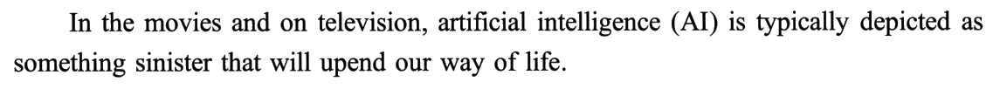
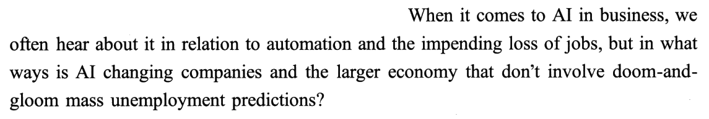
② 回答：调查说企业用 AI 多在「机器对机器」→ 主旨句 ＋ 冒号
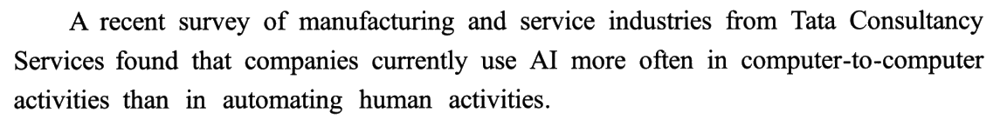
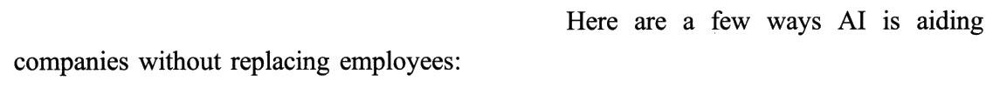
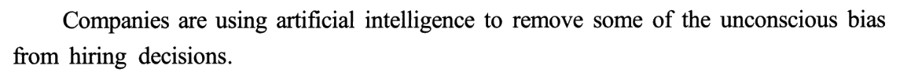
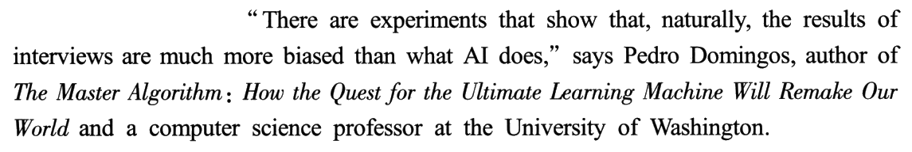
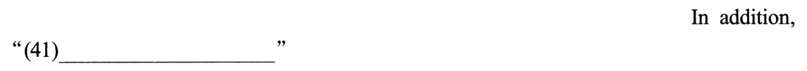
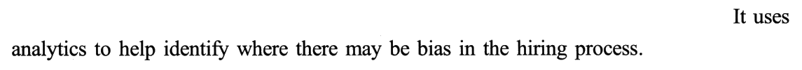
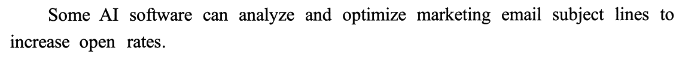
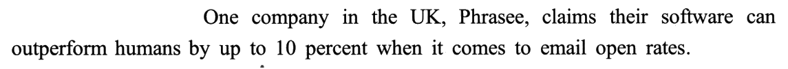
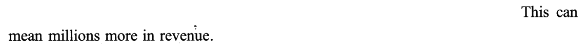
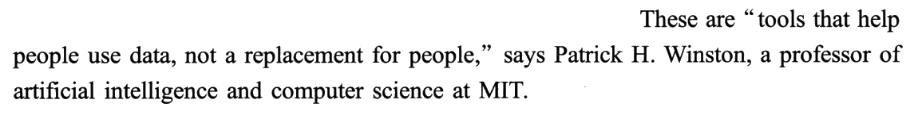
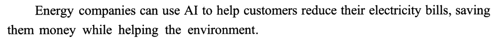
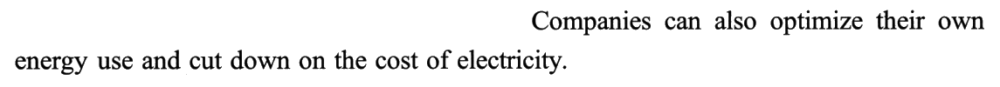
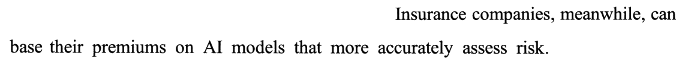
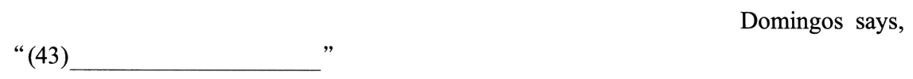
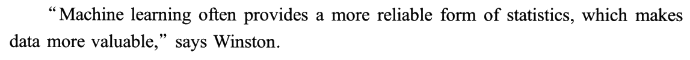
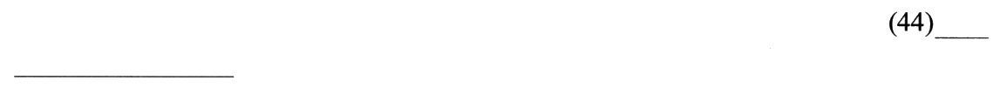
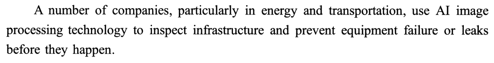
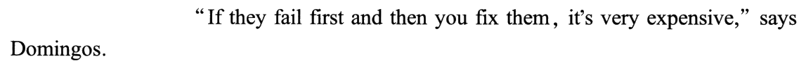
02+本页最值钱：引号分区 —— 每段都由「陈述 · 引语 · 例子」三种零件拼成，挖掉哪种零件，就要哪种语体
| 段（小标题） | 零件顺序（粗体＝被挖掉的那一件） | 空格缺的零件 | 所以空格要什么 |
|---|---|---|---|
| ③ hiring | 陈述 ❶ → Domingos 引语 ❷ → (41) 引语续 → 例子 Blendoor ❹❺ | 引语 | 口语或中性；且能被 doing this 回指成一个动作 ⟹ E |
| ④ marketing | 陈述 ❶ → 例子 Phrasee ❷ → 推论 ❸ → (42) 例子 2 → Winston 引语 ❺ | 例子 | 叙述体 ＋ 公司名 ＋ 能凑成 These 复数 ⟹ B |
| ⑤ saving | 陈述 能源 ❶❷ → 陈述 保险 ❸ → (43) Domingos 引语 | 引语 | 口语；they 回指保险公司 ⟹ G |
| ⑥ accuracy | Winston 引语 ❶❷ → (44) 例子 | 例子 | 叙述体 ＋ 公司名 ＋ accurate ⟹ D |
| ⑦ infrastructure | 陈述 ❶ → Domingos 引语 ❷ → (45) 引语续 | 引语 | 口语；接住 you fix them ⟹ F |
引语的长相也固定：教授开口，用 you 泛指（you fix them）、用 Before 讲往事、用 it would … 讲后果——七项里 A、C、F、G 四句都是这副口吻。
⟹ 先看空格在不在引号里，再看零件表缺的是什么，五个空就从「7 选 1」变成了「2 选 1」和「5 选 1」两道小题。
说话人表 —— 全文只有两位开口的人，都是教授
| 说话人 | 在哪儿开口 | 说的是什么口吻 |
|---|---|---|
| Pedro Domingos 华盛顿大学教授 | ③❷ · 41 · 43（says）· ⑦❷ · 45 | 旁观者讲道理：实验表明……／以前他们……／你得预先……——从不说「我们公司」 |
| Patrick H. Winston MIT 教授 | ④❺ · ⑥❶❷ | 下定义：工具不是替代品／机器学习让数据更可靠 |
| （任何一家公司） | 无 | 四家公司都只当例子出现，没有一家开口 ⟹ C 的「我们给我们的客户……」找不到嘴 |
🔁 和 2015 的人称分区是一家：2015 看正文从 you 换到 we，按人称给七项分区（R195）；2021 看的是引号的有无和说话人的身份（R314、R315）。两年的共同点：先不读意思，先读「谁在说、对谁说」——这一步只要十几秒，却能一次砍掉一半选项。
02++小标题覆盖表 —— 标题定范围，原词复现不加分
| 小标题 | 正确项里的换说法 | 与标题同词？ | 诱饵与它的瓜葛 |
|---|---|---|---|
| Better hiring practices | E：résumés · candidates（招聘的一头一尾） | ✗（换说法） | A 的 sources and information 也是「替人看材料」，但对象是研究 |
| More effective marketing | B：advertising performance · best results | ✗（换说法） | C 的 better channels 与 B 的 multiple channels 撞词，一个是客服渠道、一个是广告渠道 |
| Saving customers money | G：charge them too much · cost the company money | ✓ money | C：our customers——标题核心词原样出现，却是多余项 |
| Improved accuracy | D：faster and more accurate | ✓ 同根 | E 的 more promising、A 的 information 只是形似 |
| Protecting and maintaining infrastructure | F：predict · needs attention now | ✗（换说法） | G 的 Before 也在讲「事前／事后」，但 they 是保险公司 |
02+++主旨过滤器：without replacing employees —— 五个正确项都在替主旨句作证
| 项 | AI 做了什么 | 人还在不在？ |
|---|---|---|
| E | 看更多简历、挑出更有潜力的候选人 | 在——挑出来的人还要面试、录用 |
| B | 分析广告效果，作出调整或给出建议 | 在——suggestions 是给人看的 |
| G | （对照组）以前人定价不准 | 在——AI 只让定价更准 |
| D | 帮忙审合同 | 明写在：along with employees reviewing the contracts |
| F | 预先判断哪里需要处理 | 明写在：point to where it’s useful for employees to go |
| A | AI replaces the boring parts of your job | 七项里唯一一个 replace——正撞主旨 |
🔗 全文的「人」链：①❷ loss of jobs · mass unemployment（怕的）→ ②❷ without replacing employees（主旨）→ ④❺ not a replacement for people（Winston）→ D along with employees → F employees to go to。清单文的主旨句带着一个「without Y」，Y 就是全篇的红线：哪一项碰了 Y，哪一项就出局。（R317）
03两个多余项：A 与 C —— 一个撞了主旨，一个找不到说话人
| 项 | 看起来能去哪 | 为什么不行 |
|---|---|---|
| A | 42（尾句说 help people use data）· 44（上文 statistics、data ↔ sources and information） | ① 撞主旨：replaces 正撞 ②❷ without replacing 与 ④❺ not a replacement——放进 42，下一句当场把它否了；② 视角错位：your job、you’re doing research 是个人干活省事，全文五段都是企业层面的好处；③ 语体：44 在引号外，A 却是对听者说 you 的口语；④ 没有「研究」这一段 |
| C | 43（标题 Saving customers money）· 42（channels ↔ B） | ① 无说话人：We’re … our customers 是企业自称，三个引号格的说话人都是教授，没有一家公司开口；② 词面钓鱼：customers 钓 43 的标题、channels 钓 42 的 B；③ 无落点：「比打电话更好的渠道」是客服话题，全文没有客服这一段；④ also 无上家：We’re also … 要求前面先说过「我们做的另一件事」，全文找不到 |
📊 十六篇 Part B 的多余项造法总账
| 年份 | 变体 | 多余项 | 造法 |
|---|---|---|---|
| 2007 | 标题匹配 | A、G | 两项都有词面呼应（A ↔ 首句 role models，G ↔ responsible 连出两次） |
| 2008 | 选句填空 | B、F | B 阶段错位（属于末段之后）· F 与正确项 E 撞专名 |
| 2009 | 选句填空 | D、F | 同属功能论一区，而那一区没有空 |
| 2010 | 排序 | C | 复现词最多，却偏离主线 |
| 2011 | 排序 | — | 零多余项（7 格 7 项） |
| 2012 | 选句填空 | B、E | B 先用后定义（属于末段之后）· E 缺前提的 thus（正确项 G 的下家）；两项都有词面呼应 |
| 2013 | 选句填空 | A、D | A 推测句要 B 的数据（正确项 B 的下家）· D 同区换杠杆；两项都有词面呼应 |
| 2014 | 排序 | — | 零多余项（7 格 7 项）；诱饵换成「位置可挪」 |
| 2015 | 选句填空 | D、F | D 逆箭头（退回作者本意）＋ 位置满 · F 换主角 ＋ 人称不符 ＋ 词面 |
| 2016 | 标题匹配 | A、C | A 话题词冒充段落词 · C 全文零出现的心态口号；两项都比正确项「大」 |
| 2017 | 排序 | — | 零多余项；诱饵是「同一阶段的两段」：E、A 都在写作起步 |
| 2018 | 排序 | — | 零多余项；诱饵是「尾首复现」：C 末 historic events ⟶ D 首 historical events |
| 2019 | 排序 | — | 零多余项；诱饵是「同词镜像」：F ⑤ ⟶ A ①，一段诱饵两个假位置 |
| 2020 | 标题匹配 | B、F | 去条件／全称化：B instinctively（人人生来）、F Most people（大多数人）——全文每条发现都带条件；两项都有词面呼应（instinctively ← 41 · comfortable ← 45），F 的 strangers 取自被删的原文段落 |
| 2021 | 选句填空 （带小标题） | A、C | A 撞主旨：七项里唯一的 replaces，正撞 ②❷ without replacing 与 ④❺ not a replacement（方向反）· C 无说话人：we／our 是企业口吻，三个引号格的说话人都是教授（人称不符）；C 还有词面钩：customers ← 43 标题、channels ← B |
| 2022 | 观点匹配 | B、E | 没有人说过的话（无人提及型） |
⭐ 多余项五族：①「词面像」——2007 A／G · 2008 F · 2010 C · 2012 B、E · 2013 A、D · 2015 F · 2016 A · 2020 B、F · 2021 C（第九篇）；②「位置满」——2008 B · 2009 D／F · 2012 B、E · 2013 A、D · 2015 D；③「方向反」——2015 D · 2020 B（41 段）· 2021 A；④「大而空」——2016 A、C；⑤「去条件」——2020 B、F。另：「人称／说话人不符」两次，都在选句填空——2015 F（换主角）、2021 C（企业口吻，教授的嘴）。
03+六篇选句填空：五种文章线，六把钥匙
| 2008《如何写作初稿》 | 2009《文化人类学理论》 | 2012《下载与上传》 | 2013《让社会科学有用》 | 2015《阅读的方法》 | 2021《AI 助益企业》 | |
|---|---|---|---|---|---|---|
| 文章线 | 流程线：动笔前 → 写初稿 → 改初稿 | 人物线：一段一位学者 | 论证线：赞美 → 警示 → 溯因 → 出路 → 定义 | 论证线：问题 → 原因 → 方案 | 外扩线：词 → 语境 → 作者的推断 → 读者的推断 → 背景 → 目的 | 清单线：设问 → 主旨句冒号 → 五个小标题 |
| 空的形态 | 段首／段中／段末齐全 | 五个全在段末 | 四末一中 | 三中一首一末 | 三中两末，五空都有下一句 | 三末两中；一段一空、段段有小标题 |
| 破题主刀 | 唯一词 | 指代距离 ＋ 术语站位 | 论证功能 ＋ 尾钩（新词当旧信息） | 回指评价句 ＋ 预设小词 | 人称分区 ＋ Such 类名尾钩 | 引号分区 ＋ 小标题定案 |
| 最难的一处 | 43／44 连体空 | 43／44 连体空（A、B 可对调） | 45 的三选一（B、E、G） | 41 的三选一（D、E、F） | 42 的二选一（D、E，同区同人称） | 44 的 A／D（A 与上文 data 像） |
| 多余项 | B 阶段错位 · F 专名撞车 | D、F 同区一起死 | B 先用后定义 · E 正确项的下家 | A 正确项的下家 · D 同区换杠杆 | D 逆箭头 · F 换主角 | A 撞主旨 · C 无说话人 |
| Claude 盲做 | 5/5 | 3/5 | 5/5 | 5/5 | 5/5（计入 4/4） | 5/5（完整盲做） |
⚠️ 2021 是唯一带小标题的一篇：小标题让三个段末空不再需要下一句，但也送来了标题诱饵（C 的 customers）。
03++🔍 与黄皮书交叉核对：答案零书误，解析商榷四处、补两处
| 位置 | 黄皮书怎么说 | 本页的看法 |
|---|---|---|
| 42 备选 | 备选 A、B；说尾句 help people use data, not a replacement for people「似对应」A | 商榷：A 的 replaces 与 not a replacement 是正面相撞，不是「似对应」——尾句本身就把 A 否了，A 根本进不了 42 的备选 |
| 全篇 | 五题的【选项推测】都按「标题 ＋ 上下文 ＋ 复现」走，备选常有三项（43 C F G · 44 A D E） | 补：引号这一刀解析里一次没用。42、44 在引号外 ⟹ 只有 B、D 是叙述体举例；43、45 在引号里 ⟹ C 的企业口吻没人说。用上它，44 的三项备选直接剩 D |
| 43 备选 | 说 accurately assess risk 符合 F 的定位 | 商榷：F 的 predict 与 assess risk 同属「预判」，但把 F 排出 43 的不是这一点，是 F 的后半句 point to where it’s useful for employees to go——派人去现场，是设施维护的事 |
| 45 | 只给备选 F，无【排除干扰】 | 补：G（Before, they … 也是「没用 AI 时的老做法」，但 they 要会 insure）与 A（you 口语也能进引号，但讲研究） |
| 字数 | 526 words | 商榷（小）：人工逐句数，正文 380 ＋ 小标题 15 ＋ 五个答案 132 ＝ 527，差 1；可能是 Patrick H. Winston 的 H. 或 (AI) 的计法不同 |
| 来源 | 《大西洋月刊》2018 年 How A.I. Might Actually Make Your Job Easier | 存疑（软）：同标题文章现见于摩根大通官网 news-stories 栏目；可能是品牌合作稿两处刊登，没有抓全文、没有核实，照黄皮书标 |
04Part B 分诊表：四种变体 · 十六篇实做（开考三十秒先认变体）
| 变体 | Directions 里的原话 | 考什么 | 打法与用时 |
|---|---|---|---|
| 选句填空 2008 · 2009 · 2012 · 2013 · 2015 · 2021 | some sentences have been removed … two extra choices | 衔接与连贯 | 认线 → 先找一把「分区刀」：正文中途换人称就按人称分（2015），空格有的在引号里、有的在外就按引号分（2021）→ 定空的形态 → 段中空先读下一句、段末空看小标题或下一段首句 → 先做区里候选最少的空 → 剩下两项问「是不是撞了主旨、是不是没人说这句话、是不是某个答案的下家」。6–8 min，能自查 |
| 标题匹配 2007 · 2016 · 2020 | choose the most suitable heading／subheading | 段落概括 | 看七项句式：祈使句（2007、2016）⟹ 每段一条建议，逐段找主句；陈述句（2020）⟹ 每段一条发现，原词不在就换上位词 → 用覆盖表验 → 剩下两项问「是不是总话题」或「是不是把条件删了」。5–8 min |
| 观点匹配 2022 | match each person … with the statements | 立场判定 | 先给每人贴「支持／反对／中间」，再按立场分堆匹配。8–10 min |
| 排序题 2010 · 2011 · 2014 · 2017 · 2018 · 2019 | reorganize these paragraphs into a coherent text … numbered boxes | 篇章顺序 | 先数格子（有无多余项）→ 认文体 → 给每格数候选，被已给定段锁死的先做 → 通读验闭合（六种链条见 2019 新题型 · 04）。7–10 min，能自查 |
⚠️ 2021 提醒一件事：Directions 定变体，正文定打法。Directions 写的是选句填空，正文却带着小标题——别因为看到小标题就改用标题匹配的打法（逐段找主句），这里要选的仍是一句能接上前后句的话，小标题只是多给的一条线索（R32）。
📊 十六篇战绩：2007 标题 5/5 · 2022 观点 5/5 · 2008 选句 5/5 · 2009 选句 3/5 · 2010 排序 5/5 · 2011 排序 5/5 · 2012 选句 5/5 · 2013 选句 5/5 · 2014 排序 5/5（不计完整盲做）· 2015 选句 5/5（计入 4/4）· 2016 标题 5/5 · 2017 排序 5/5（不计完整盲做）· 2018 排序 5/5 · 2019 排序 5/5 · 2020 标题 5/5 · 2021 选句 5/5（✅ 完整盲做）。六篇选句填空 28/30，唯一的翻车仍是 2009（没认线）。
05长难句精析（9 句 · 本篇黄皮书无此栏目，全部原创 · 原句看句条）
本篇句子不难（最长 49 词，靠的是同位语堆叠），难在两样：倒装的疑问句（①❷）和引号只括半句（④❺ · ⑥❷）——后者直接决定 42、44 是不是引号格。
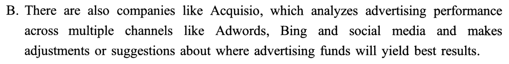
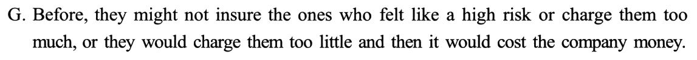
06可搬进作文的素材（本篇是「人工智能与就业 / 科技与人 / 预防胜于补救 / 人机协作」四个话题的弹药库）
每条只借原文的句式骨架（X、Y 处换词），斜体例句全部是自拟的。
🔁 跨篇联动：2021 Text 4 讲谁来管网络、本篇讲企业怎样用 AI——同一张卷子里两篇科技文，一篇谈规则、一篇谈工具；写「科技与社会」类大作文时，两篇各取一条：技术本身是工具（本篇），用好它要靠规则（T4）。
07词汇复盘（点卡片看详情 · 共 张，含 15 处熟词僻义）
本篇熟词僻义的共同规律：商业场景把日常词换成了行话——open rate 的 open 是「邮件被打开」、subject line 是「邮件主题行」、premium 是「保费」、charge 是「收费」、yield 是「产出」、channel 是「渠道」、practice 是「做法」、promising 是「有前途的」、attention 是「（设备）需要处理」。最危险的是 premium 和 charge：一个读成「优质的」、一个读成「充电／指控」，43 题的头钩和 G 就都读不懂了。